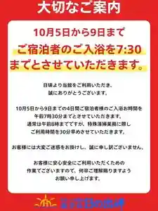
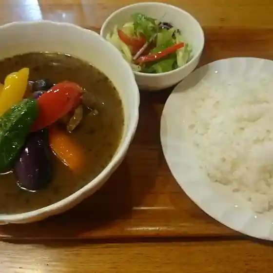
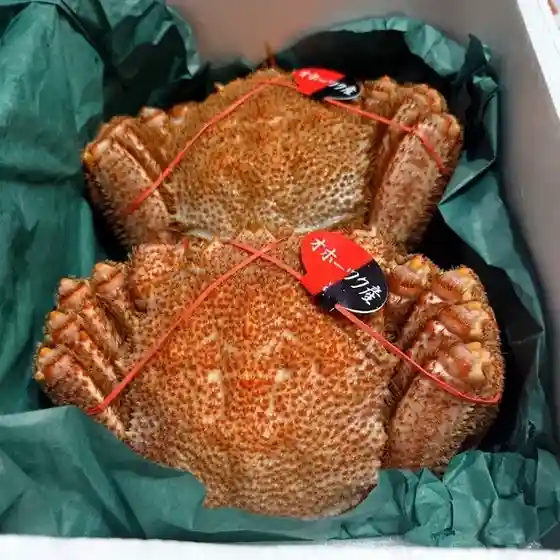
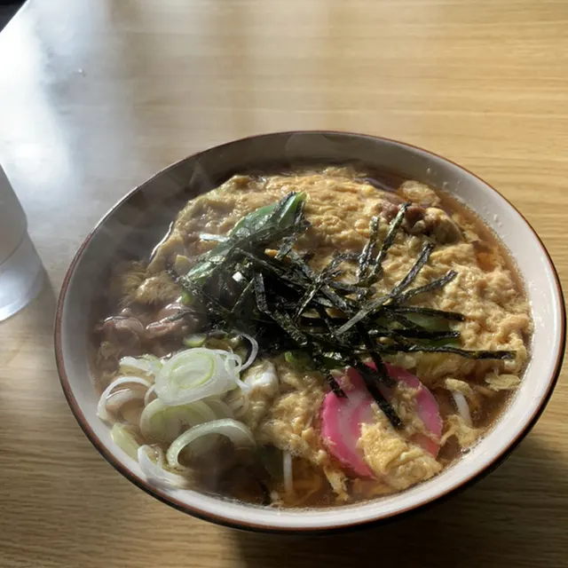
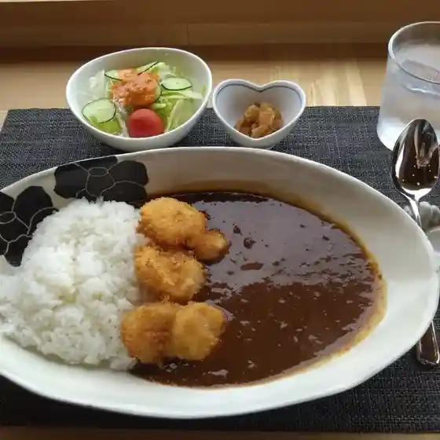
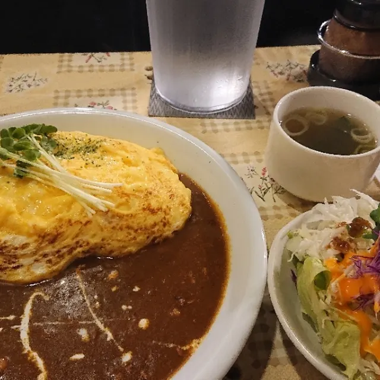
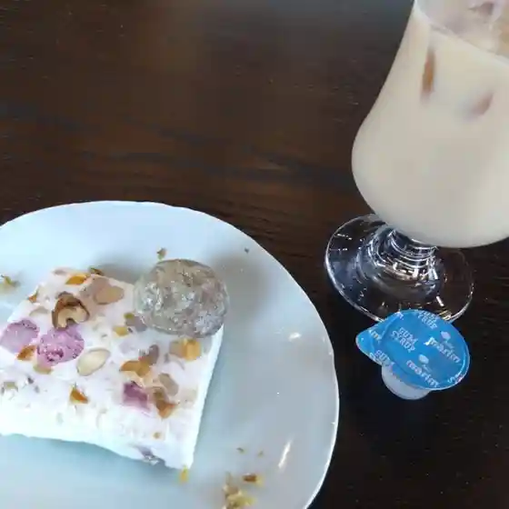
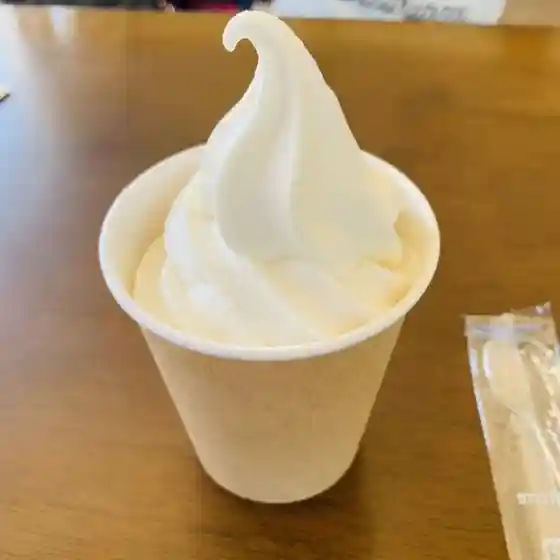

Omu
Omu · Hokkaido
Omu
Highlighted on the Hokkaido map.
Stay
オホーツク温泉 ホテル日の出岬

Ohootsuku Onsen Hoteru Hinode Misaki
Dining
ひまわり

Himawari
雄武漁協直販店 海鮮丸

Oumu Gyokyou Chokuhanten Kaisen Maru
ダルマヤ

Darumaya
ひとのえき

Hitonoeki
Cafe Lunch Jun

Cafe Lunch Jun
カフェ うしり

Kafe Ushiri
ブルーグラスファーム

Buruugurasufaamu
みなと寿し

Minato Hisashi Shi
寿し処 須藤
Hisashi Shi Tokoro Sudou
セイコーマート 雄武日の出店
Seikoomaato Oumu Hinode Mise
海宝
Kaihou
どん
Don
かどや食堂
Kadoya Shokudou
レストラン 藍
Resutoran Ai
中華酒家 悦
Chuuka Shuka Etsu
焼そば 香良
Yaki Soba Kaori Ryou
セイコーマート 雄武店
Seikoomaato Oumu Mise
民宿北雄
Minshuku Kitao
なごみ家はる
Nagomi Ie Haru
LAWSON 紋別雄武町店
Lawson Monbetsu Oumuchou Mise
出塚食品
Shutsu Tsuka Shokuhin
丸忠きそば
Maru Tadashi Kisoba
季の栞
Ki No Shiori
まつ
Matsu